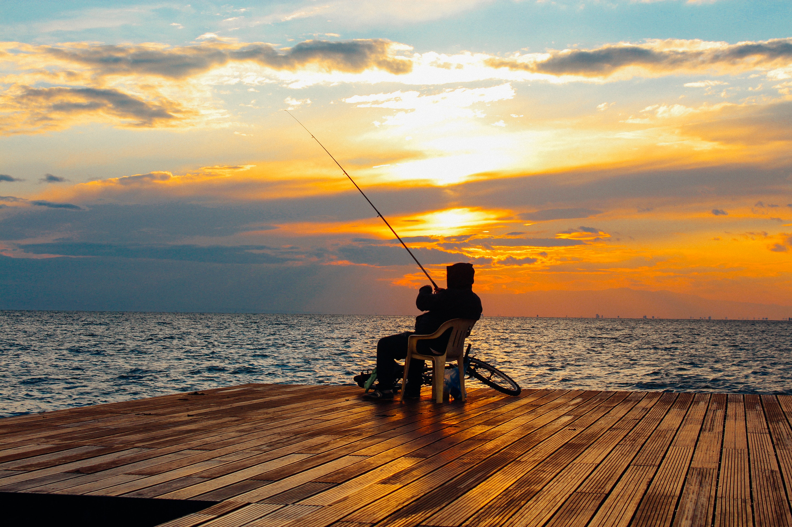

1 / 4
One of my favorite things is watching or playing basketball. I played throughout high school,
starting as point guard from my freshman year and playing travel ball as well. I'm also a die-hard Lakers fan!
2 / 4

Fishing is my favorite outdoor hobby. It's so relaxing sitting at the lake, listening to nature
and catching fish all day. They taste pretty good too!
3 / 4

Believe it or not, I really enjoy coding and constantly learning and being challenged by it. The most
satisfying feeling in the world is when you have been working on a problem and FINALLY get it to work. Or when you're in
the zone and write a big chunk of code and it runs the first time with no errors.
4 / 4

Of course, anyone who's ever worked with computers has to game on them right? I play games like League of
Legends, CS:GO and Rust just to name a few. If you have any suggestions I'd love to hear them!